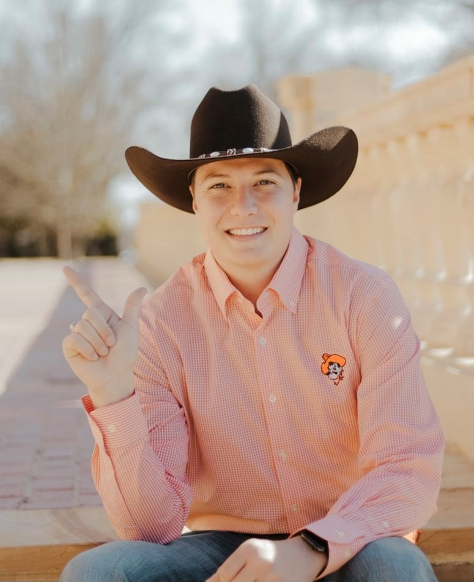
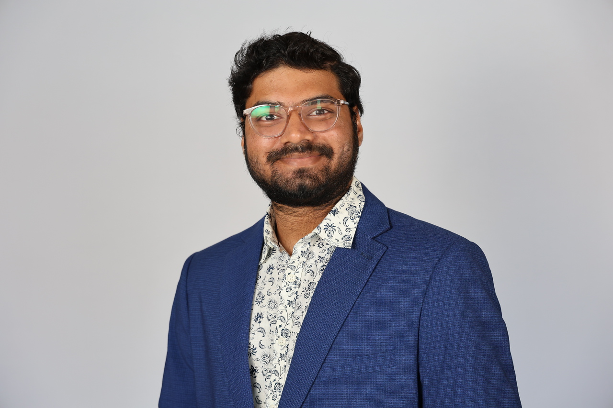

The Lab
RISE Lab
Meet the students I advise and those who have worked with our group.
Current Students

Jacob Kettner
Jacob studies how soil data, weather observations and forecasts, and crop parameters affect irrigation recommendations from models such as pyfao56. His work focuses on major crops in the Southern Great Plains.
Alok Pandit
Alok applies Q-Stable to study sustainable groundwater use in Oklahoma. He completed his M.S. in Summer 2026, studying how OpenET can support irrigation water management, and joined our group as a Ph.D. student in August 2026.

Abinava Yeshwanth Kalayambakam Janardhan
Yeshwanth uses machine learning and deep learning to estimate soil moisture at different depths in irrigated fields. He completed his M.S. in Computer Science with our group and now studies how these estimates can guide irrigation.
Satheesh Meadi
Satheesh combines sensor measurements with machine learning and deep learning to predict canopy temperature in irrigated cotton.
Past Students
Tatumn Kennedy
Tatumn compared crop water use across irrigation systems in Southwest Oklahoma and studied where relative humidity limits the use of canopy temperature for irrigation scheduling.
Palash Kumar Kundu
Palash developed models of canopy temperature in irrigated cotton for use in irrigation scheduling.
Gillian Quellar
Gillian used OpenET to study crop water use in Southwest Oklahoma.